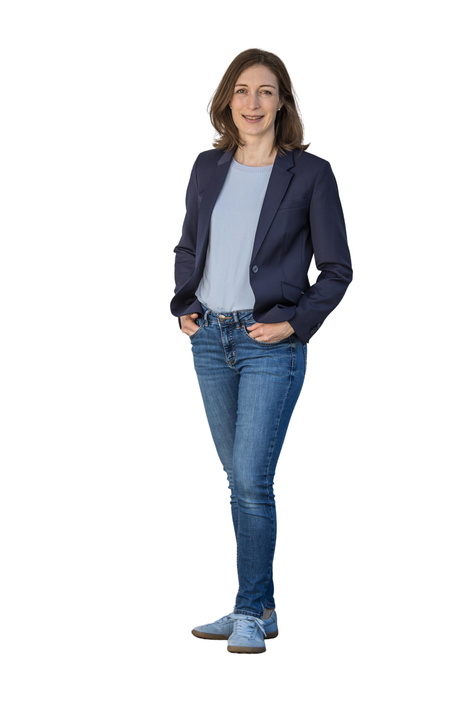

Klar. Verlässlich. Besser für Mering.
| Was Sie von mir erwarten dürfen: | Was Sie nicht von mir erwarten dürfen: |
|---|---|
| Dass ich überparteilich und lösungsorientiert arbeite | Dass ich keinen eigenen Standpunkt habe |
| Dass ich mich an Recht und Gesetz halte und eigene Fehler offen eingestehe und korrigiere | Dass ich keine Fehler mache |
| Dass ich zuhöre und Bürgerinnen und Bürgern Raum für ihre Anliegen gebe | Dass jeder Bürgerwunsch erfüllt werden kann |
| Dass ich verantwortungsvoll mit öffentlichen Geldern umgehe | Dass Merings Finanzen morgen saniert sind |
| Dass ich mich Mitarbeiterinnen und Mitarbeitern gegenüber verbindlich und respektvoll verhalte | Dass jeder gleich glücklich mit mir ist. Auch unbequeme Entscheidungen gehören dazu. |
| Dass ich meinen Aufgaben gewissenhaft nachkomme und mich für Mering einsetze | Dass ich jede Vereinsfeier besuchen kann |
| Dass ich transparent kommuniziere, auch wenn es unbequem ist | Dass ich immer sofort eine Lösung parat habe |
Klar. Verlässlich. Besser für Mering.

geboren 1984in Aachen verheiratet,
3 Kinder 2. Bürgermeisterin Sportabzeichen
in Gold 🏅 M.Sc. aus
Schweden 🎓 Bedarfsplanerin Marktgemeinderätin mehr Lust als Zeit
für Musik und Sport
Liebe Meringerinnen und Meringer,
Mering ist für meine Familie und mich zur Heimat geworden. Wir leben gern hier, in einer Gemeinde mit kurzen Wegen, lebendigen Vereinen, aktiven Kirchengemeinden und einem starken Miteinander. Genau das möchte ich bewahren. Aber was auch gilt: In einer sich wandelnden Welt können wir nicht stehen bleiben.
Mering soll gut aufgestellt sein für die Zukunft, und dafür braucht es mehr als Repräsentation. Als Gemeinderätin und 2. Bürgermeisterin kenne ich die Aufgaben im Rathaus aus der täglichen Arbeit. Als Textilökonomin und Bedarfsplanerin bringe ich Erfahrung aus Wirtschaft und Handel mit: Ich weiß, wie man vorausschauend plant und Ressourcen sinnvoll einsetzt.
Dafür stehe ich: Klarheit in den Entscheidungen, Verlässlichkeit im Handeln und Transparenz in der Kommunikation. Ehrlich, auch wenn es einmal unbequem ist.
Jetzt ist die Zeit für einen neuen Stil in der Kommunalpolitik: mutig, sachlich, lösungsorientiert. Ich bitte Sie um Ihr Vertrauen am 17.01.2027.
Ihre Laura Matthes

Eine Verwaltung, die für Sie arbeitet
Zufriedene Mitarbeiterinnen und Mitarbeiter sind der beste Service für die Bürger. Verlässliche Personalplanung, klare Zuständigkeiten, Weiterbildung und Technik, die die Arbeit erleichtert. Digital, wo es Zeit spart – das persönliche Gespräch bleibt, wo es gebraucht wird.
Wer gut arbeiten kann, kann auch gut helfen.
Wirtschaftsstandort Mering stärken
Eine klare wirtschaftliche Ausrichtung statt Einzelfallentscheidungen: Welche Betriebe und Branchen wollen wir gezielt ansiedeln? Dazu eine feste Anlaufstelle, die Genehmigungen begleitet und Fristen im Blick behält.
Verlässliche Ansprechpartner sind der beste Standortfaktor.

Mering für Familien
Keine Familie soll um einen Betreuungsplatz zittern müssen. Vorausschauende Planung nach tatsächlichen Geburten- und Zuzugszahlen, Strukturen, die mitwachsen. Flexible Lösungen statt Großprojekte, die am Bedarf vorbeigehen.
Planungssicherheit für Familien. Verlässlichkeit für den Haushalt.


Mering für morgen
Verkehrslösungen, die alle mitdenken, mit sicheren Fuß- und Radwegen. Maßvoll nachverdichten, Ortscharakter erhalten, bezahlbar wohnen. Naturschutz bei allen Entscheidungen. Photovoltaik und kalkulierbare Wärme für kommunale Gebäude.

www.lauramatthes.de · Instagram: lauramatthes
VR Bank Augsburg-Ostallgäu eG
IBAN DE11 7209 0000 0005 9000 93 · BIC GENODEF1AUB
Betreff: „Spende zweckgebunden OV Mering“